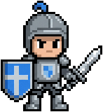
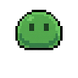
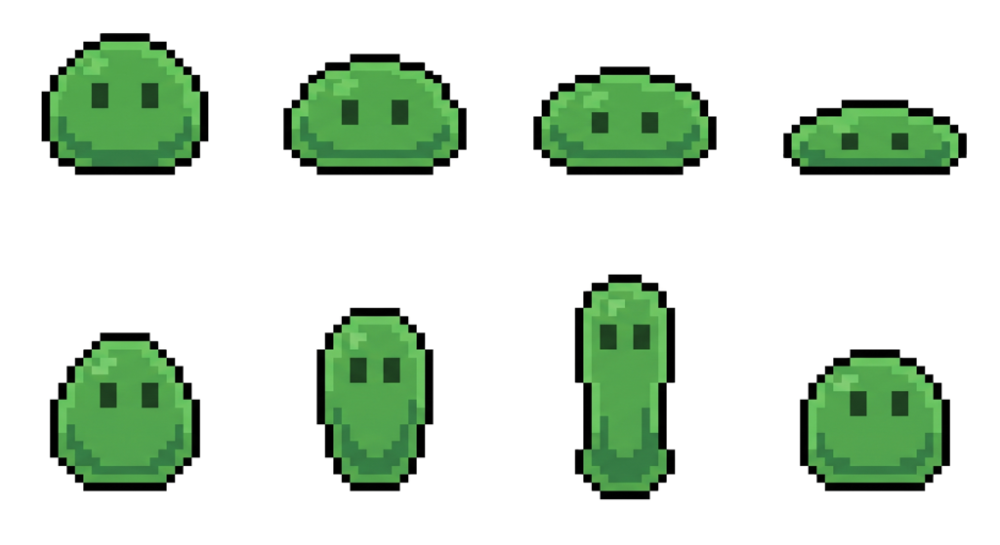
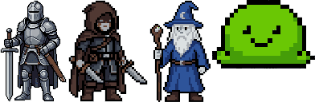
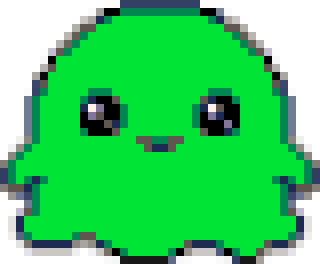

Gemini's image models as an MCP server and a CLI — spending the Gemini plan you already pay for, instead of billing per image. Os modelos de imagem do Gemini como servidor MCP e CLI — gastando o plano do Gemini que você já paga, em vez de cobrar por imagem.
Everything below came out of the commands next to it — trimmed, transparent, sliced and looped by the tool, not by hand. Tudo aqui embaixo saiu dos comandos ao lado — recortado, transparente, fatiado e em laço pela ferramenta, não na mão.

nanobridge sprite "…knight…" --size 160
nanobridge sheet "a green slime" --grid 4x2
This is the one thing here that nothing else does. Isto é a única coisa aqui que nenhum outro faz.

Generate characters one at a time and they do not match — the model picks a slightly different green each time, and the set looks assembled from separate sessions. cast generates them together, reads one palette from the whole group, locks everyone to it, and packs the result into an atlas with the manifests you asked for.
Gerar personagens um a um dá um elenco que não combina — o modelo escolhe um verde ligeiramente diferente a cada vez, e o conjunto parece montado de sessões separadas. O cast gera todos juntos, tira uma paleta do grupo inteiro, trava todo mundo nela e empacota num atlas com os manifestos pedidos.
nanobridge cast "a knight with a sword" "a hooded rogue" "an old wizard" \
--size 128 -f godot -f cssThe four above came out of exactly that, in one command. Os quatro acima saíram exatamente disso, num comando.

--pixels 40 --zoom 8 --palette pico8
Eight built-in palettes (PICO-8, Game Boy, CGA, C64, Sweetie 16, Endesga 32 and two greyscales), plus .hex files and inline colour lists. Matching is perceptual, not raw RGB — it has to be: in plain RGB the grey #5F574F sits closer to a mid green than PICO-8's own green does, so a green slime came out grey.
Oito paletas embutidas (PICO-8, Game Boy, CGA, C64, Sweetie 16, Endesga 32 e duas em cinza), mais arquivos .hex e listas de cor na linha de comando. O casamento é perceptual, não RGB cru — e tem que ser: em RGB puro o cinza #5F574F fica mais perto de um verde médio do que o próprio verde da PICO-8, e um slime verde saía cinza.
--size scales the image; --pixels rebuilds it at an exact number of art pixels, so the grid closes and every art pixel is one pixel. Downscaling 2816px straight to 128px gives blocks of 4, 5 and 6 mixed together — it reads as pixel art until somebody zooms in.
--size redimensiona a imagem; --pixels reconstrói com um número exato de pixels de arte, então a grade fecha e cada pixel da arte é um pixel. Reduzir 2816px direto para 128px dá blocos de 4, 5 e 6 misturados — parece pixel art até alguém dar zoom.
Because on a free plan it answers 429 to every image, and on a paid one it bills twice for something already paid. Porque no plano grátis ela responde 429 para toda imagem, e no pago ela cobra de novo por algo que já foi pago.
The AI Studio key is the obvious route and it does not work: gemini-2.5-flash-image, gemini-3.1-flash-image and gemini-3-pro-image all answer 429 RESOURCE_EXHAUSTED, because the free tier grants zero image quota. Turning billing on fixes it and starts charging per image — while the Gemini subscription sitting on the same account goes unused.
A chave do AI Studio é o caminho óbvio e não funciona: gemini-2.5-flash-image, gemini-3.1-flash-image e gemini-3-pro-image respondem 429 RESOURCE_EXHAUSTED, porque o nível gratuito dá cota zero para imagem. Ligar faturamento resolve e passa a cobrar por imagem — enquanto a assinatura do Gemini na mesma conta fica parada.
| Backend | AuthAutenticação | CostCusto |
|---|---|---|
web (default)(padrão) |
the Gemini cookie already in your browsero cookie do Gemini que já está no navegador | the plan you already haveo plano que você já tem |
api |
GEMINI_API_KEY |
per image, needs active billingpor imagem, exige faturamento ativo |
nanobridge doctor says which one is live and how much quota is left. Nothing to paste, nothing to buy.
nanobridge doctor diz qual está de pé e quanta cota sobrou. Nada para colar, nada para comprar.
Clone and run the installer. Needs Python 3.11+ and a browser signed in to gemini.google.com. The repository is private, so cloning goes through an authenticated gh.
Clonar e rodar o instalador. Precisa de Python 3.11+ e um navegador logado no gemini.google.com. O repositório é privado, então o clone passa por um gh autenticado.
gh repo clone NspxMiguel/NanoBridge ~/Projects/NanoBridge
cd ~/Projects/NanoBridge && ./install.sh
Either way you get the nanobridge command, the MCP server registered with Claude Code, and the agent skill installed.
Dos dois jeitos você fica com o comando nanobridge, o servidor MCP registrado no Claude Code e a skill do agente instalada.
nanobridge doctor
nanobridge sprite "a green slime" --style pixel --size 128
nanobridge icon "a compass rose" --style flat
nanobridge edit hero.png "make the sky stormy, keep everything else"
nanobridge sheet "a green slime" --grid 4x2 \
--action "squash down and stretch back up, a bouncy idle loop" --fps 10
# local, no network, no quotalocal, sem rede, sem cota
nanobridge cut photo.jpg --transparent --trim --size 256
nanobridge slice sheet.png --grid 6x1 --size 96
nanobridge atlas hero.png villain.png item.png -o game/atlas
atlas packs loose sprites into one sheet plus a JSON manifest of where each named sprite sits — what Godot, Phaser and Unity call a sprite atlas.
atlas empacota sprites soltos numa folha só, mais um manifesto JSON de onde cada sprite nomeado ficou — o que Godot, Phaser e Unity chamam de atlas de sprites.
Eight MCP tools — and every generating one hands the picture back to the model. Oito ferramentas MCP — e toda que gera devolve a imagem para o modelo.
One sprite, background removed and trimmed.Um sprite, sem fundo e já recortado.
A sheet, sliced into frames, assembled into a looping GIF.Uma folha, fatiada em quadros, montada em GIF que dá laço.
Free-form, with reference images and multi-turn edits.Livre, com imagem de referência e edição em várias rodadas.
Change any image on disk in plain language.Muda qualquer imagem do disco em linguagem normal.
Local post-processing. No network, no quota.Pós-processamento local. Sem rede, sem cota.
A whole set of characters, one shared palette, packed.Um elenco inteiro, uma paleta só, empacotado.
Take a palette off art you like, put it on everything else.Tira a paleta de uma arte boa e põe no resto.
Loose sprites into one sheet plus a manifest. Local, no quota.Sprites soltos numa folha só, mais manifesto. Local, sem cota.
Which backend is live and what quota is left.Qual canal está de pé e quanta cota sobrou.
Drop a stale session right after signing back in.Solta uma sessão morta assim que você entra de novo.
The preview handed back is the point: an agent that cannot see what it drew cannot tell a good sprite from a broken one, and iterates blind. A pré-visualização de volta é o ponto: um agente que não vê o que desenhou não distingue sprite bom de sprite quebrado, e itera às cegas.
The model returns a large JPEG on a flat background. Sprites need the opposite. O modelo devolve um JPEG grande com fundo chapado. Sprite precisa do contrário.
nanobridge doctor says so in one line.
O canal web depende de uma sessão de navegador. Quando ela expira, é entrar de novo no gemini.google.com — o nanobridge doctor avisa numa linha.api backend is the fallback that stays put.
Ele fala com uma interface que o Google não documenta, então mudança do lado deles pode quebrar. O canal api é a reserva que não sai do lugar.NanoBridge is not the only project on this idea. O NanoBridge não é o único projeto nessa ideia.
gemini-webapi-mcp, by AndyShaman, reaches Nano Banana through a browser session too, since February 2026, on largely the same stack. Two things here exist because that project showed they were worth having: NANOBRIDGE_COOKIE_FILE, to point at a browser cookie store outside the default location, and nanobridge_reset, to drop a stale session on purpose right after signing back in.
gemini-webapi-mcp, de AndyShaman, também chega ao Nano Banana por uma sessão de navegador, desde fevereiro de 2026, com praticamente a mesma pilha. Duas coisas aqui existem porque aquele projeto mostrou que valiam a pena: NANOBRIDGE_COOKIE_FILE, pra apontar um cookie de navegador fora do lugar padrão, e nanobridge_reset, pra soltar uma sessão morta de propósito logo depois de entrar de novo.